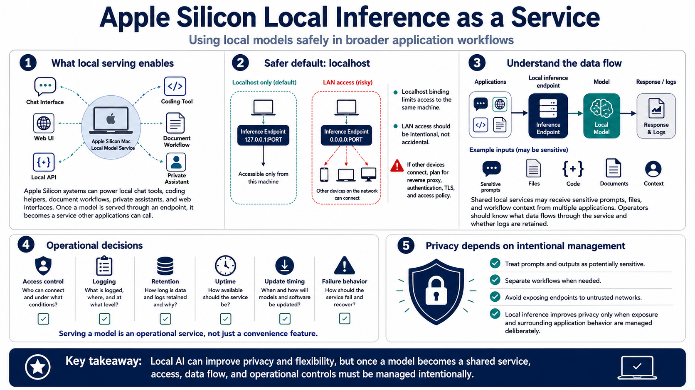

Serving Local Models to Applications
Connecting to LMS... Progress: in progress

Narration
Apple Silicon systems can run local chat interfaces, web UIs, local inference APIs, coding tools, document workflows, and private assistants. Once a local model is served through an endpoint, it can become part of a broader application workflow. That is useful, but it also changes the risk profile. The model is no longer only an interactive experiment. It is a service other tools may call.
Localhost binding is a safer default for private inference services because it limits access to the local machine. LAN access can be useful for a homelab or team environment, but it should be deliberate. Reverse proxies, authentication, TLS, and access policy may be needed at a high level if other users or devices connect. Avoid accidental exposure of a local model endpoint to untrusted networks.
Applications that call local models should be scoped carefully. A coding tool, document assistant, or private chat interface may send sensitive prompts, files, or context to the inference endpoint. If several applications share one local service, operators should understand which data flows through it, whether logs are retained, and whether different workflows should be separated.
Serving local models is not just a convenience feature. It requires decisions about access control, logging, retention, uptime, update timing, and failure behavior. Treat prompts and outputs as potentially sensitive data. Local inference can improve privacy, but only when service exposure and surrounding application behavior are managed with intention.